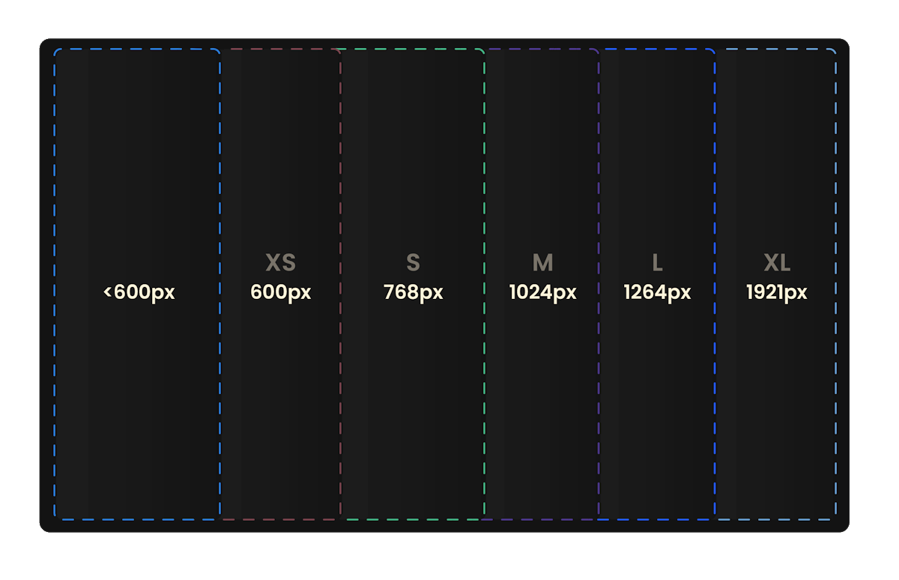

Layout¶
Die nachfolgenden Kapitel beschreiben Einstellungen, welche Auswirkungen auf das visuelle Verhalten der Website haben.
Breakpoints¶
$breakpoints
Breakpoints werden verwendet, um das Layout einer Website auf verschiedene Bildschirmbreiten anzupassen, was als Responsive Webdesign bezeichnet wird. Dadurch kann das Erscheinungsbild je nach Gerät oder Fenstergröße optimiert werden.
Typische Breakpoints sind beispielsweise für
- Smartphones (kleine Bildschirme)
- Tablets (mittelgroße Bildschirme)
- Desktops (große Bildschirme)
definiert, um ein konsistentes und benutzerfreundliches Erlebnis auf unterschiedlichen Geräten zu gewährleisten. Im Gegensatz zu anderen CSS-Frameworks legt der ThemeManager auch Wert auf Bildschirme, die über Full HD (1920 x 1080) hinausgehen. 
{kind=link}
Der ThemeManager fügt sechs Breakpoints hinzu, die sich in den StyleManager-Einstellungen als Suffix der Konfigurationen
widerspiegeln, zum Beispiel (xs).
{kind=link}
| Breakpoint | Bildschirmgröße | Geräte |
|---|---|---|
| - | <600px | Smartphones (portrait) |
| xs | ≥600px | Smartphones (landscape) |
| s | ≥768px | kleine Tablets (portrait) |
| m | ≥1024px | Tablets (portrait) |
| l | ≥1264px | Desktop (1080p) |
| xl | ≥1921px | Desktop (1440p, 4k) |
Jeder Breakpoint kann individuell angepasst werden, der Name kann aber nicht geändert werden.
Verfügbare (S)CSS-Variablen
Media queries¶
Sofern der Skin mit SCSS geschrieben und im Theme eingebunden wird, können mit den folgenden Mixins auf die Breakpoints zugegriffen werden:
Verfügbare SCSS-Mixins
@include media-breakpoint('xs') { ... } // @media (min-width: 600px) { ... }
@include media-breakpoint('s') { ... } // @media (min-width: 768px) { ... }
@include media-breakpoint('m') { ... } // @media (min-width: 1024px) { ... }
@include media-breakpoint('l') { ... } // @media (min-width: 1264px) { ... }
@include media-breakpoint('xl') { ... } // @media (min-width: 1921px) { ... }
@include max-breakpoint('xs') { ... } // @media (max-width: 599.98px) { ... }
@include max-breakpoint('s') { ... } // @media (max-width: 767.98px) { ... }
@include max-breakpoint('m') { ... } // @media (max-width: 1023.98px) { ... }
@include max-breakpoint('l') { ... } // @media (max-width: 1263.98px) { ... }
@include max-breakpoint('xl') { ... } // @media (max-width: 1920.98px) { ... }
Info
Mehr zu der Subtraktion von 0.02px kann hier gefunden werden: https://www.w3.org/TR/mediaqueries-4/#mq-min-max
Verhalten¶
Die Einstellungen dieser Kategorie beeinflussen das Verhalten des mehrspaltigen Layouts und ermöglichen dabei drei einstellbare Breiten (small, medium, large) für die linke und/oder rechte Spalte.
Verhaltensänderung¶
$layout-column-[small|medium|large]-break $layout-column-width-* $layout-column-gutter-*
Diese Optionen erlauben die Auswahl eines Breakpoints für die Verhaltensänderung, bei welcher die linke und/oder rechte Spalte in der gleichen Reihe wie die Hauptspalte angezeigt werden.
{kind=link}
Über $layout-column-width-* können die Breiten für die linke und rechte Spalte eingestellt werden. Mit
$layout-column-gutter wird der Abstand zur Hauptspalte konfiguriert.
Tip
Sofern nur eine oder zwei Breakpoints gewünscht sind, kann das kleinere $layout-column-[]-break auf die gleiche
Einstellung wie die des nachfolgenden eingestellt werden.
Artikel¶
Horizontale Breite¶
$x-spacing-large-m $x-spacing-large-l $x-spacing-small
Die horizontale Breite kontrolliert die Breite des Inhalts von Artikeln, um sicherzustellen, dass der Inhalt auf großen Bildschirmen nicht übermäßig gedehnt wird. Dies dient dem Lesefluss und verhindert schlechten Fokus, indem eine angemessene Begrenzung für die Breite des sichtbaren Inhalts festgelegt wird.
In Artikeln kann die Breite dieser unter Component > Article-Spacing > Left-Right-Spacing eingestellt werden. Die
Einstellungen greifen hier bei folgenden Bildschirmbreiten bzw.
Media-Queries:
| Left-Right-Spacing | Media-Query | Variable | CSS-Klasse |
|---|---|---|---|
| Small | Wert in $x-spacing-small |
$x-spacing-small |
.art-px-1 |
| Medium | Breakpoint l |
$x-spacing-large-l |
.art-px-2 |
| Large | Breakpoint m |
$x-spacing-large-m |
.art-px-3 |
Verfügbare (S)CSS-Variablen
Horizontaler Abstand zum Bildschirmrand¶
$article-outer-padding
Ist kein anderes Gutter im Artikel eingestellt, so ist der Abstand zum Bildschirmrand auf mobilen Endgeräten immer die Hälfte des konfigurierten Grid-Gutter. Möchte man diesen Abstand vergrößern, so kann ein zusätzlicher Abstand konfiguriert werden.
{kind=link}
Da ab bestimmten Auflösungen die Artikelbreite agiert, verhält sich das $outer-padding wie der Tabelle zu entnehmen.
| Breakpoints | Fensterbreite | Padding |
|---|---|---|
kleiner xs |
<600px |
$article-outer-padding |
xs bis s |
600px - 1023.98px |
$article-outer-padding-xs |
s bis m |
600px - 1023.98px |
$article-outer-padding-s |
ab m |
≥1024px |
0 |
Warning
Der äußere Abstand greift nur, wenn eine horizontale Breite im Artikel eingestellt wurde.
Vertikaler Abstand¶
$article-spacing-* $article-main-spacing-bottom
Um Artikel optisch voneinander zu trennen, können in den StyleManager-Optionen die Abstände unter Article-Spacing
ausgewählt werden.
Folgende Konfigurationen können über alle Breakpoints vorgenommen werden und beeinflussen den
inneren Abstand (padding) von Artikeln.
| Top-Bottom-Spacing | Media-Query | CSS-Klasse |
|---|---|---|
| Small | Wert in $x-spacing-small |
.art-py-1 |
| Medium | Breakpoint l |
.art-py-2 |
| Large | Breakpoint m |
.art-py-3 |
Article-Spacing für mobile Endgeräte
Die mit dem Präfix $article-spacing-xs-* versehenen Variablen gelten auch für Bildschirmbreiten <600px.
Artikel-Höhen¶
$article-options-vheight $article-options-height
Möchte man Vollbild-Artikel erstellen, sodass diese den gesamten Bildschirm ausfüllen, kommt man um Viewport-Höhen nicht herum.
Mithilfe der Variable $article-min-vheight lassen sich mehrere vh Höhen generieren, welche in Artikeln unter
Component > Height ausgewählt werden können. Das generierte CSS wird als Custom Property bereitgestellt und
beeinflusst die Höhe von Artikeln über:
Info
Im Exkurs: Artikel-Höhe und Kopfzeilen-Höhe gibt es mehr Informationen zur Artikel-Höhe.
Über $article-options-height können zusätzliche Höhen kommasepariert mit einer Einheit eingetragen werden, sodass auch
feste Höhen generiert werden können.
Nach dem Kompilieren stehen hierbei folgende Klassen zur Verfügung, welche über die angegebenen Optionen erstellt werden.
| Variable | Wert | CSS-Klasse | CSS |
|---|---|---|---|
$article-options-vheight |
50 | .a-vh-50 |
--art-hght: 50dvh |
| 75 | .a-vh-75 |
--art-hght: 75dvh |
|
| 100 | .a-vh-100 |
--art-hght: 100dvh |
|
$article-options-height |
500px | .a-h-500px |
--art-hght: 500px |
| 40rem | .a-h-40rem |
--art-hght: 40rem |
Dynamische Variablen
Dynamische Einstellungen stehen erst nach Speichern & Kompilieren zur Verfügung, da die neuen Optionen sowohl in
den Style-Sheet-Dateien als auch in den dynamischen Style-Manager-Optionen (templates/style-manager-tm.xml)
hinterlegt werden.
Grid¶
$grid-columns $grid-gutter-width $grid-gutter-bottom
Das CSS-Framework des Contao ThemeManagers verwendet ein Flexbox-basiertes 12-Spalten-Grid-System, in das sich die Inhaltselemente in Artikeln einordnen lassen.
Ein Artikel dient hierbei immer als Grid-Container, der die Ausrichtung der Kind-Elemente (Inhaltselemente) steuern kann. Inhaltselemente lassen sich in das 12-Spalten-Raster einordnen.
{kind=link}
Spaltenanzahl von 12 ($grid-columns)
Es wird nicht empfohlen, die Anzahl der Spalten von 12 zu ändern, da die Optionen des StyleManagers nicht aktualisiert werden!
Die Breite zwischen den Spalten lässt sich über $grid-gutter-width, der Abstand nach unten über $grid-gutter-bottom
einstellen. Die Optionen finden sich als Gutter in den Style-Manager Optionen wieder.
Info
Die hier vorgenommene Konfiguration hat auch Auswirkungen auf das Gutter: small, welches die Hälfte der hier
eingestellten Werte beträgt.
Grid-Klassen
| Breakpoint Auflösung |
~ <600px |
xs ≥600px |
s ≥768px |
m ≥1024px |
l ≥1264px |
xl ≥1921px |
|---|---|---|---|---|---|---|
| Klasse | .col-* |
.col-xs-* |
.col-s-* |
.col-m-* |
.col-l-* |
.col-xl-* |
| Anzahl Spalten |
12 ($grid-columns) |
Verfügbare (S)CSS-Variablen
Exkurs: List (Grid-List) und Alignment¶
List
Unterschiedlich der Spaltenbreite in Artikeln und Inhaltselementen, kann die in Listen-Elementen verfügbare
StyleManager-Einstellung Element > List genutzt werden, um die Kind-Elemente gleichmäßig in einer Reihe zu verteilen.
Ist Columns auf 3 Columns eingestellt, so werden pro Reihe drei Elemente angezeigt, weitere Elemente rutschen in die
nächste Reihe.
Horizontales und Vertikales Alignment
Vertikales Alignment
Exkurs: Columns, Order und Offset¶
Abstände (Innen)¶
Paragraphen¶
$paragraph-spacing
Element-Spacing¶
$element-spacing-*
Vertikales Padding¶
$top-bottom-padding-small
Horizontales Padding¶
$left-right-padding-small
Abstände (Außen)¶
Vertikales Margin¶
$top-bottom-margin-*
Horizontales Margin¶
$left-right-margin-*
Bild-Text¶
$image-text-behaviour-min-width $image-text-ratio-options